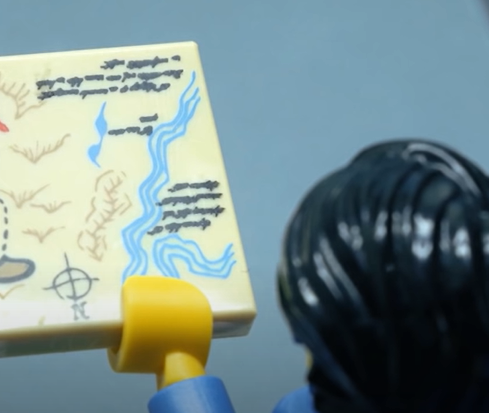
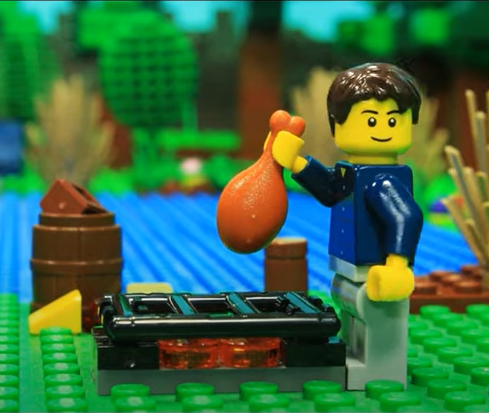
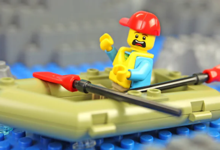

Adventure
Ye be sure t' find starb'rd adventure t' please any salty cur Yer crew will nah mutiny when ye be on one o' our adventures.
Main Fork o' th' Salmon River, Idaho
Nestled deep in th' Frank Church Wilderness o' No Return winds th' Salmon river. Th' Salmon was given th' nickname long ago as th' River o' No Return by th' scallywags livin' nigh it 'cause o' th' number o' folks that came t' visit 'n fell so in love wit' th' rugged beauty o' th' river that they ne'er left.
Herds o' elk 'n deer graze on th' hillsides around th' river 'n bear 'n bighorn sheep are also commonly sighted. Th' river corridor be also lined wit' awe inspirin' ponderosa pine which tower o'er th' sandy beaches in th' campsites 'n provide shelter from sun or rain when needed.
Let's nah forget th' rapids! They range from crew I-IV. Th' Salmon be one o' th' longest undammed rivers in th' United States. As a free flowin' river th' water be higher, faster, 'n colder in th' early summer 'n lower, slower, 'n warmer in th' late summer. Thar are good rapids all summer...but families wit' sprogs who like t' swim tend t' appreciate th' late summer's slower, warmer water more. Reserve yer ship
Desolation 'n Gray Canyon, Utah
Windin' through canyons in central Utah, in some o' th' most desolate land anywhere, th' Green river flows towards th' mighty Colorado river 'n th' sea. High grey stone cliffs, beautiful desert scenery, 'n great rapids 'ave made this run famous. This 84-mile trip runs from from Sand Wash t' Swaseys Rapid (jus' outside Green River Utah) 'n boasts outstandin' scenery, interestin' geologic formations, evidence o' prehistoric 'n historic human activity, 'n great whitewater opportunities.
Desolation be rated a Class II/III 'n be usually done in 6 days
Desolation Canyon has been recognized as a National Landmark. This designation be based on th' uniqueness 'n rich history that th' canyon tells. Reserve yer ship
Death Canyon, Arizona
'tis th' grand cap'n o' all canyons 'n th' grand cap'n o' all river trips. Ye will ne'er forget yer visit t' th' Grand Canyon.
Grand Canyon river raftin' combines world-crew whitewater wit' breathtakin' scenery t' make one truly unforgettable river experience. Th' canyon be filled nah only wit' exhilaratin' whitewater rapids, but wit' side canyons 'n ancient indian ruins accessible only by river.
CLASS I - X: Th' Grand Canyon uses a unique river ratin' scale. Th' rapids in th' Canyon are technically rated I - X ( 1 - 10) t' accommodate such a wide variety o' rapids 'n river variances. However, most scallywags are familiar wit' th' regular I - V river ratin' scale, so we often refer t' both. Reserve yer ship